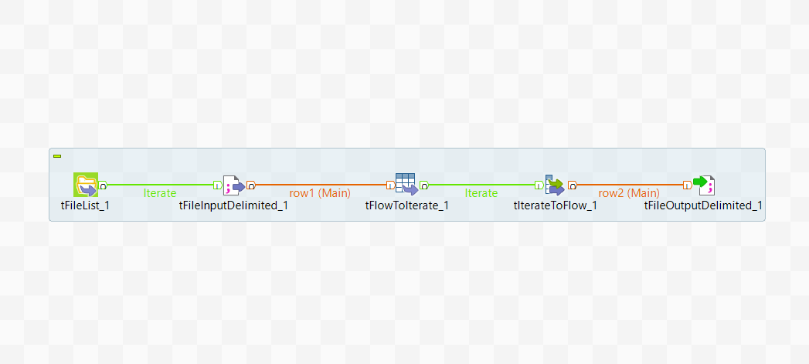

About Zomato
Zomato is an Indian restaurant aggregator and food delivery start-up founded by Deepinder Goyal and Pankaj Chaddah in 2008. Zomato provides information, menus and user-reviews of restaurants, and also has food delivery options from partner restaurants in select cities.
About Our Project
.............................................................................................................................................................
Data Format
Write about the data given to us in csv format and the columns in it
Data Cleaning
import numpy
df = pd.read_csv(r"path.csv")
df.isnull().sum()
paste-graph
paste-graph
Write about how we cleaned the data
Data Integration
import numpy
df = pd.read_csv(r"path.csv")
df.isnull().sum()
paste-graph
paste-graph
Write about how we Integrated the data
A data science report is a type of professional writing used for reporting and explaining your data analysis project. These reports are used in the industry to communicate your findings and to assess the legitimacy of your process. For this reason, it is essential to present your work according to industry standards with the utmost attention to detail and professional presentation. Below we’ll talk about a few steps to keep in mind while walking through the process of creating a professional-level data analysis report.
graph photo
Preparing
When writing your report, it is essential to keep your audience in mind. A general rule of thumb is to make your writing clear, succinct, and well organized. This enables audiences to quickly skim through your report to find the information they are looking for. You should imagine that you are writing for several different audiences at once. These audiences typically include:
- Your Collaborator and/or Client: As your primary audience, this person reads the introduction and conclusion, then skims the body of your report for specific points.
- An Executive Person: As a secondary audience, this person quickly reads the introduction and the conclusion in order to understand what you did and what your findings are.
- A Technical Supervisor: Also a secondary audience, this person reads the body and the Appendix of your report. This person is looking to see to see how legitimate your technical methods are.
paste-graph